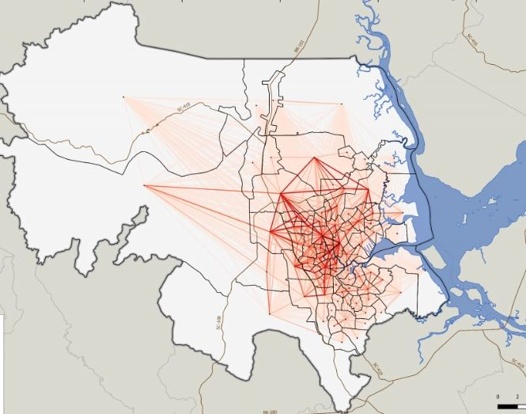

Sobre Joinville
Joinville é uma cidade estratégica localizada no norte de Santa Catarina, destacando-se como um importante polo industrial e econômico do estado. Conhecida como a "Cidade das Flores" devido à sua rica flora, Joinville é um dos principais centros industriais do Brasil, com forte presença nos setores metalúrgico, têxtil e de tecnologia.
Destaques da cidade
- Infraestrutura moderna e bem desenvolvida
- Alto índice de qualidade de vida
- Centro industrial e logístico de grande relevância
- Cultura rica
Sua localização próxima ao litoral catarinense e à cidade de Curitiba, aliada à diversidade de setores econômicos, faz de Joinville uma cidade vibrante, com forte crescimento e grande influência na economia regional e nacional.

Figura 1: Índice de Cidades Empreendedoras ENAP, 2023[1].
Divisão Geográfica
A cidade de Joinville pode ser dividida em sete regiões geográficas principais (macrozonas):
- Centro
- Norte
- Sul
- Sudeste
- Leste
- Oeste
- Extremo Norte
Regiões mais populosas: Centro e Sul
Regiões com maior densidade populacional: Centro e Leste
Cada uma dessas regiões apresenta características únicas:
- O Centro concentra atividades comerciais e administrativas.
- As regiões Norte e Oeste se destacam por suas áreas industriais e rurais.
- A zona Sul é conhecida por sua grande expansão residencial e infraestrutura de lazer.
Dados Gerais
- Área Territorial: 1.127,947 km² (IBGE)
- População (IBGE 2022): 616.317 habitantes
- Densidade demográfica: 546,41 hab/km²
Mapas e Recursos
- Mapa da área urbana de Joinville - ResearchGate
- Mapa de Densidade Demográfica - Prefeitura de Joinville
Camada 1: Dados Geoespaciais e Regulatórios
Fontes de Dados Geoespaciais
- IBGE - Dados sobre Joinville
- Mapa interativo disponível no GitHub
Leis e Regulamentações
- Lei Complementar nº 27/96: Normas de uso e ocupação do solo (Leis Municipais)
- Lei Complementar nº 470 (LOT): Parcelamento, uso e ocupação do solo (Gmais)
- Emendas à Lei de Uso e Ocupação do Solo: Disponível no NSC Total
Licenciamento e Impactos Urbanos
- O licenciamento ambiental é essencial para projetos urbanos como vertiportos.
- O Plano de Mobilidade Urbana de Joinville pode impactar a instalação de novas infraestruturas.
- O Plano Diretor de Joinville define as diretrizes para o crescimento da cidade.
Bases de Dados GIS
- SIMGeo - Sistema de Informações Municipais Georreferenciadas
- Restituições aerofotogramétricas
- Fotos aéreas
- Arquivos vetoriais (DWG, Shapefile)
- Mapas em PDF
- Restituições Aerofotogramétricas Históricas (1938 e 1966)
- Mapas Geológicos e Hidrogeológicos (SGB)
- OpenStreetMap (dados colaborativos geoespaciais)
Camada 2: Transporte e Sociodemografia

Figura 2: Municípios Integrantes das intermediações de Joinville[2].
Figura 3: Totalidade de quilometros quadrados de extensão das regiões próximas a Joinville[2].

Figura 4: Divisão Administrativa de Joinville[2].

Figura 5: Municípios integrantes das regiões geográficas imediata e intermediária de Joinville[2].

Figura 6: Principais acessos a Joinville[2].
Distâncias dos Portos até 125Km: - Porto de Navegantes - distância: 88 km de Joinville - Porto de Itajaí - distância: 93 km de Joinville - Porto de Itapoá - distância: 79 km de Joinville - Porto de São Francisco do Sul - distância: 61 km de Joinville - Porto de Paranaguá - distância: 125 km de Joinville

Figura 7: Padrão de deslocamento dos joinvilenses pelo município[3].

Figura 8: Pontos de tráfego intenso em horário de pico[4].